파일 업로드 (CSV/Excel)
로컬 저장소에 있는 CSV, Excel, JSON 등의 정형 데이터 파일을 업로드.
데이터 가져오기 (Data Loading)
실습에 사용할 정제된 모바일 중고기기 데이터를 불러옵니다.
어떤 데이터가 필요할까?
rice.csv
쌀 종류 예측?
A정미소에서는 요리 종류에 따라 각기 다른 종류의 쌀 사용을 위해 쌀 데이터를 이용하여 쌀 종류를 예측하고자 한다.
데이터 가져오기
분석 데이터 문제정의
문제정의
쌀 데이터를 활용해서, 쌀 종류를 예측하는 인공지능 모델을 만들어보자
PAPS 등급측정은?
심폐지구력, 유연성, 근력과 근지구력, 순발력, 비만정도를 측정 =>1등급(아주높음), 2등급(높음),3등급(보통),4등급(낮음),5등급(매우낮음)
데이터 컬럼명
- id : 고유번호
- area : 면적
- vertical_length : 장축길이
- horizontal_length : 보조축길이
- eccentricity : 이심률
- convex_area : 볼록면적
- diameter : 지름
- perimeter : 둘레
- roundness : 원형율
- thickness : 두께
- rice_type : 쌀종류
기초정보 분석
데이터의 평균, 중앙값, 최빈값, 표준편차 등 핵심 통계 지표를 한눈에 파악합니다.
🧯문제
종속변수(output 컬럼)란 독립변수(input 컬럼)를 바탕으로 예측하는 대상을 의미한다. 다음 중 이 과제를 해결하는 데 필요한 종속변수를 고르시 4
- 1지름(diameter)
- 2쌀번호
- 3중복되는 관측치는 없다
- 4두께(thickness)
- 5쌀종류(rice_type
🧯문제
모델 학습시 예측에 영향을 미치치 않는 단순 식별자로 제외 칼럼으로 지정해야 하는 변수는? 4
- 1면적(area)
- 2고유번호(ID)
- 3원형율(roundness)
- 4이심률(eccentricity)
🧯문제
데이터의 전체 개수(observation)를 작성하시오.
💊힌트
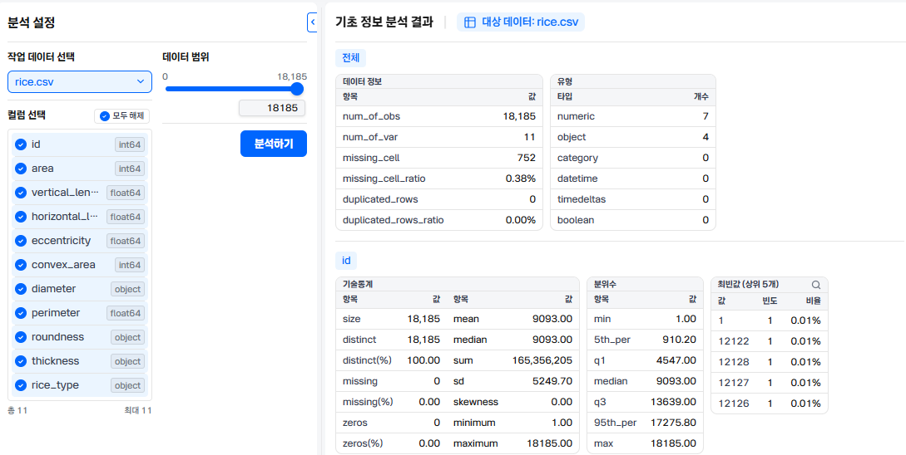
🧯문제
'장축길이(vertical_length)의 평균(mean)를 작성하시오.
💊힌트
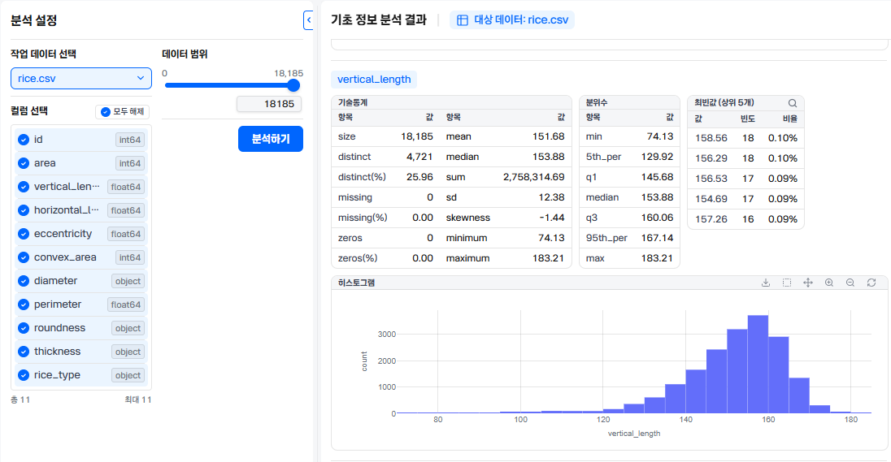
🧯문제
전체 결측치 개수를 작성하시오.
💊힌트
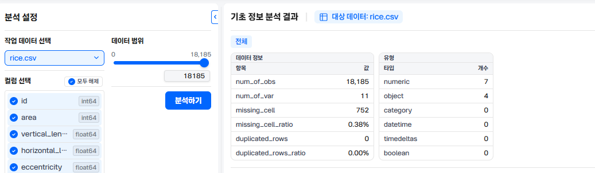
🧯문제
면적(area)의 평균(mean)을 소수점 둘째 자리까지 작성하시오.
💊힌트
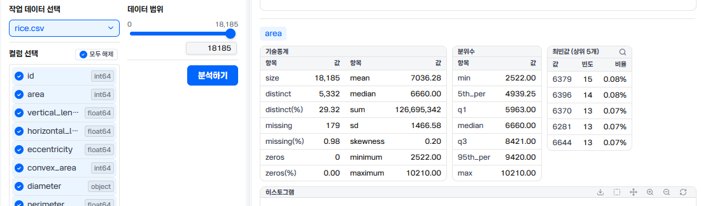
시각화분석
데이터 내 누락된 값(NaN)의 분포와 정상 범위를 벗어난 아웃라이어를 찾아냅니다.
🧯문제
'이심률(eccentricity)과 가장 큰 음의 상관관계(correlation)를 가지는 변수를 고르시오. [히드맵]
- horizontal_length : 보조축길이
- vertical_length : 장축길이
- area : 면적
- perimeter : 둘레
💊힌트
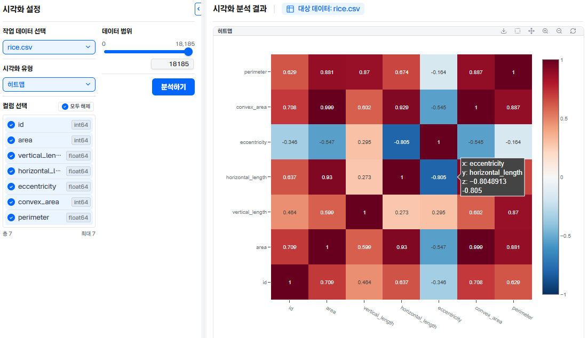
🧯문제
가장높은 양의 상관관계(correlation)를 보이는 두 변수의 조합을 고르시오. [히드맵]
- 면적(area) : 블록면적
- 장축길이(vertical_length) : 보조축길이(horizontal_length)
- 면적(area) : 이심률
- 고유번호(id) : 둘레(perimeter)
💊힌트
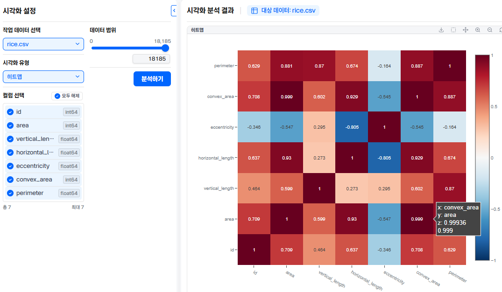
🧯문제
eccentricity(이심률)에서 한국쌀중 이심률이 0.94인 데이터의 갯수는? [분포차트]
💊힌트
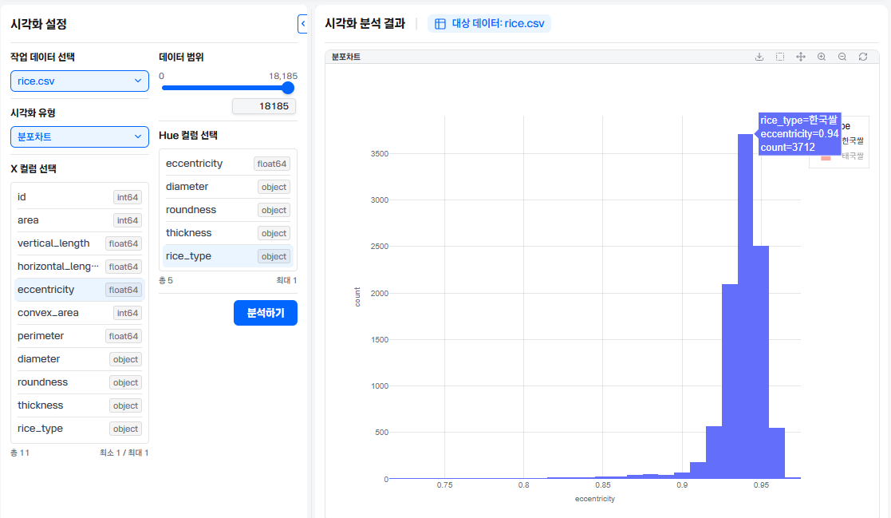
🧯문제
Y칼럼 eccentricity, X칼럼 rice_type 로 하고 한국쌀의 min값을 작성하시오? [박스차트]
💊힌트
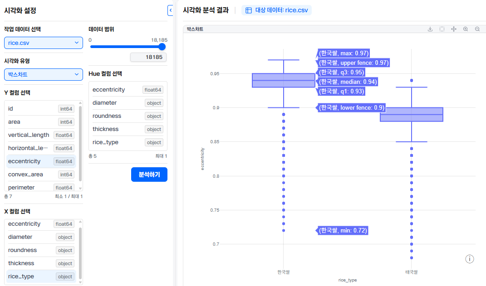
비지도학습분석
군집화 및 차원 축소 등의 비지도 학습 기법을 활용하여 데이터의 구조를 파악합니다.
비지도학습
비지도 학습 관련 실습 및 문제 영역입니다.
데이터 샘플보기
데이터를 확인 할 수 있습니다.
데이터샘플
데이터 가공
결측치와 중복 데이터를 처리하고 정돈된 형태로 정제합니다.
🧯문제
모든 변수의 결측치(missing cells)를 다음 가이드에 따라 처리한 후, "면적(area)"의 결 측치(missing cells)를 대체하는 값을 작성하시오
- 종속변수를 제외한 모든 변수의 결측치(missing cells)를 처리하시오.
- 수치형 데이터로 구성된 변수는 중앙값(median)로 대체하시오.
- 범주형 데이터로 구성된 변수는 최빈값(most_frequent)으로 대체하시오.
- 수행 후 기존 변수는 삭제하고 [가공 데이터 저장]을 클릭하여 가공된 데이터를 저장하시오.
💊힌트
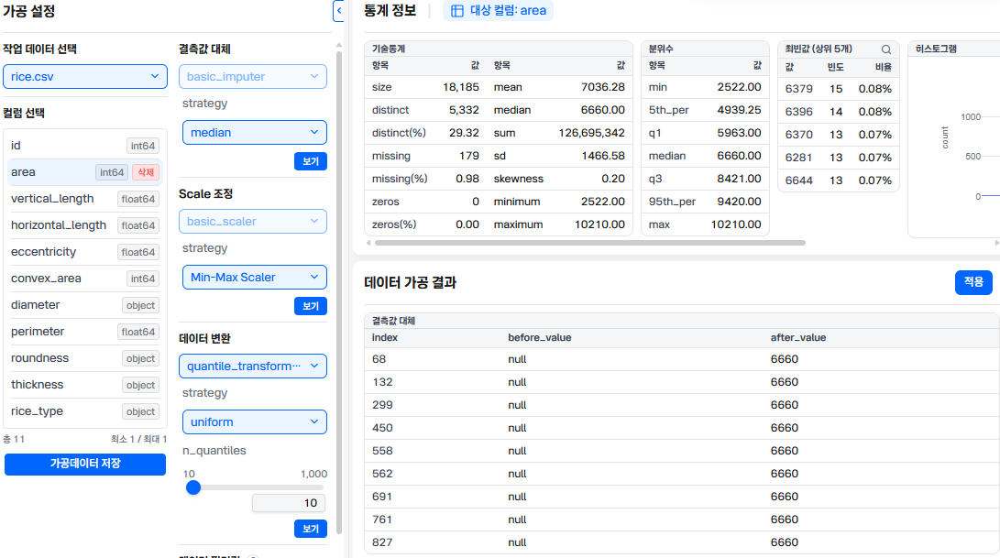
머신러닝 학습
머신러닝 알고리즘을 선택하고 학습을 진행합니다.
딥러닝 학습
모델의 학습 성능에 영향을 주는 세부 파라미터 값(학습률, 트리 깊이 등)을 지정합니다.
딥러닝 학습
🧯문제
다음 가이드에 따라 딥러닝 모델을 학습하고, 해당 모델의 정확도(Accuracy)를 작성하 시오.
- [AI모델 학습] 메뉴를 활용하시오.
- 작업 데이터 선택:
- 문항 5에서 처리한 데이터를 사용하시오.
- Input 칼럼:
- "고유번호(id)"는 제외 칼럼으로 지정하시오.
- 범주형 변수는 데이터 인코더를 sparse로 설정하시오.
- Output 칼럼:
- 종속변수를 Output 칼럼으로 지정하시오.
- 칼럼 Parameter 설정:
- 데이터 유형은 모델 유형에 맞게 설정하시오.
- FC레이어수: 1, FC레이어크기: 20, 드롭아웃: 0, 활성함수: softmax, FC활성함수: relu
- 학습 Parameter 설정:
- Epochs: 10, 그 외 초기 설정값 사용
- 답안 작성:
- 모델 학습 후 오른쪽 상단의 [모델 저장] 기능을 통해 모델을 저장하시오.
- 정답 작성은 반올림하여 소수점 넷째 자리까지 작성하시오.
💊힌트

🧯문제
아래 가이드에 따라 딥러닝을 학습하고 정확도를 작성하시오
- 작업 데이터 선택: 가공된 데이터를 사용하세요
- Input 칼럼
- 연도, 시도, 학교급, 학년_IM, BMI는 제외 컬럼으로 지정
- 범주형 변수는 데이터 인코더를, sparse로 설정
- Output 칼럼 : 종속변수를 Output로 설정
- 칼럼 parameter설정
- 데이터 유형은 모델 유형에 맞게 설정하시오
- FC레이어수:2. FC레이어크기:100, 드롭아웃0, 활성화함수 relu
- 학습 Parameter 설정 : Epochs:2, Batch size:128, Early Stop:5, Optimizer: adam, Learning Rate:0.001, 교차검증 fold수 :1
-
답안작성
- 모델 학습후 오른쪽 상단의[모델저장 ]기능을 통해 모델을 저장하시오
- 정답 작성은 반올림하여 소숫점 넷째 자리까지 작성하시오
💊힌트
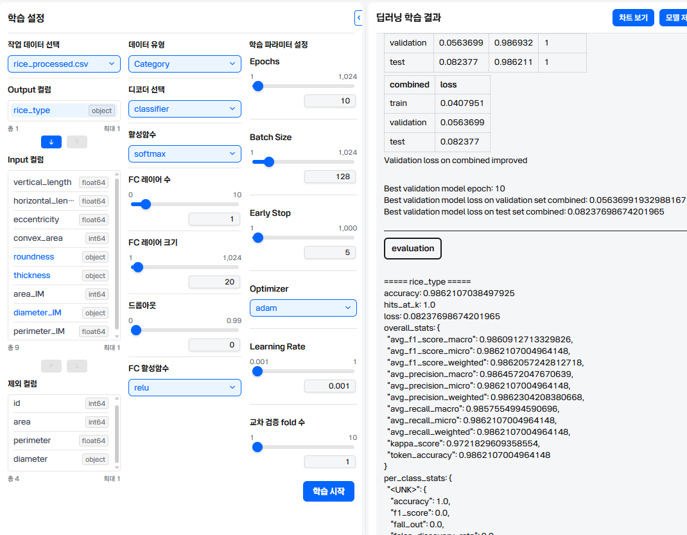
AI 모델 활용
새로운 대량의 데이터셋을 모델에 입력하여 일괄적인 예측 결과 값을 도출합니다.
변수영향도 확인
🧯문제
학습한 딥러닝 모델 분석 결과, "쌀종류(rice_type)"을 결정하는데 가장 중 요한 요소를 작성하시오
💊힌트
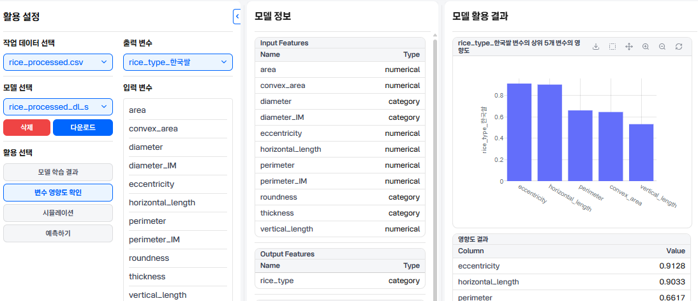